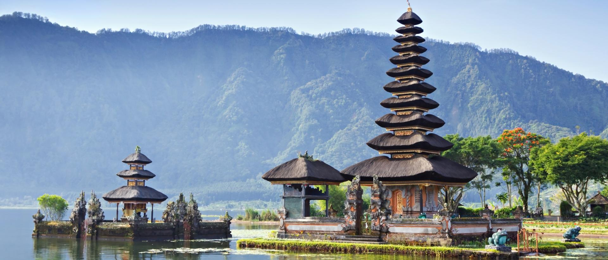
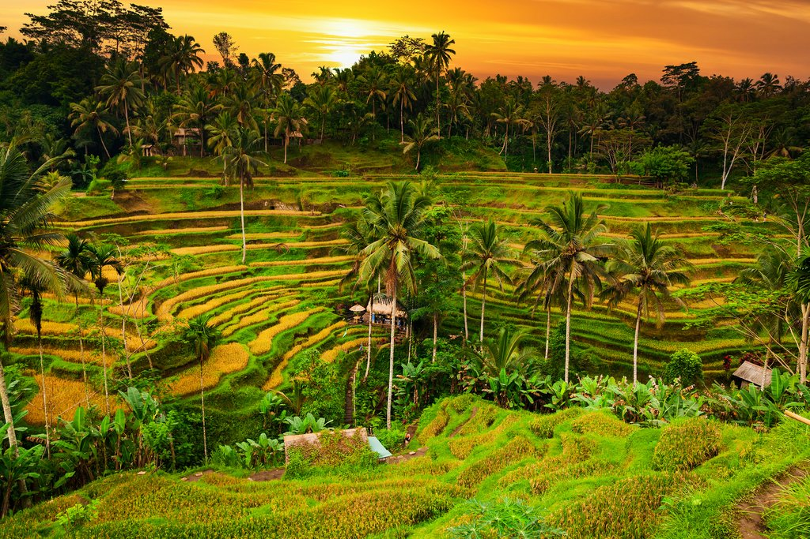
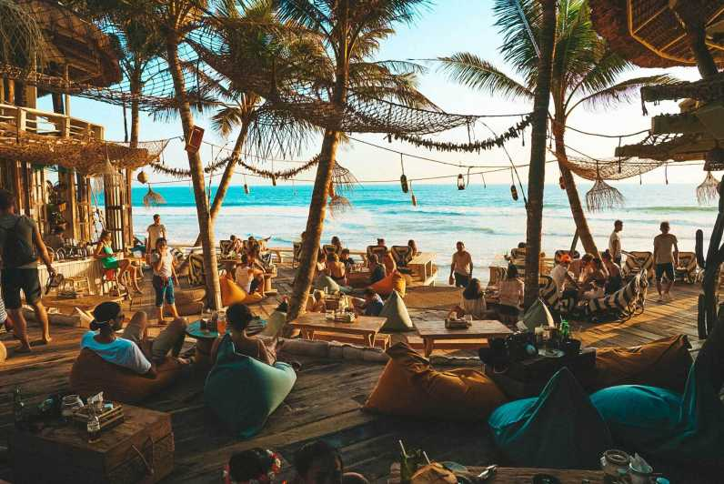

Sanur
.jpg) Sanur is a family friendly seaside town blessed with great sunrises.Geographically it
lies opposite Kuta and Seminyak, but is the polar opposite to the busy west coast in it
chilled, easy-going character.
Sanur attracts families with its pure eastern stretches of golden-sand beaches lapped by peaceful,
reef-sheltered waters. These languid, shallow seas are ideal family sanctuaries in which children
can play safely while adults rest in sleepy comfort.
If looking for more exertion than your daily swim, Sanur is has a lot of water based activities to
offer; wake boarding, kayaking, parasailing, sea-walking and kitesurfing. Sanur’s long tradition of
fishing is visible every morning as the jukung outrigger boats bring in the daily catch. You can
easily hire one to head out into the waters to pass a few hours.
Along Sanur’s 8 km coastline is a paved boardwalk for cycling, jogging or just strolling along while
looking for a local restaurant for a tasty meal. Sanur’s thriving main street, Jalan Danau
Tamblingan, is full of restaurants, shops and amenity stores so you don’t have to go far to be
fed and watered.
Sanur’s sleepy popularity and village charm continues to attract new converts,
and repeat visitors, to enjoy its unpretentious ambiance.
Sanur is a family friendly seaside town blessed with great sunrises.Geographically it
lies opposite Kuta and Seminyak, but is the polar opposite to the busy west coast in it
chilled, easy-going character.
Sanur attracts families with its pure eastern stretches of golden-sand beaches lapped by peaceful,
reef-sheltered waters. These languid, shallow seas are ideal family sanctuaries in which children
can play safely while adults rest in sleepy comfort.
If looking for more exertion than your daily swim, Sanur is has a lot of water based activities to
offer; wake boarding, kayaking, parasailing, sea-walking and kitesurfing. Sanur’s long tradition of
fishing is visible every morning as the jukung outrigger boats bring in the daily catch. You can
easily hire one to head out into the waters to pass a few hours.
Along Sanur’s 8 km coastline is a paved boardwalk for cycling, jogging or just strolling along while
looking for a local restaurant for a tasty meal. Sanur’s thriving main street, Jalan Danau
Tamblingan, is full of restaurants, shops and amenity stores so you don’t have to go far to be
fed and watered.
Sanur’s sleepy popularity and village charm continues to attract new converts,
and repeat visitors, to enjoy its unpretentious ambiance.
Gianyar

Gianyar’s gentleness and mystical feel offers a nourishing and blissful pleasure affecting all
visitors and creating long lasting memories.
Gianyar offers ideal opportunities for cultural immersion as Bali’s cultural and spiritual home,
Ubud, is just 10km away. The sacred Elephant Cave [Goa Gajah], the Bat Cave Temple [Goa Lawah]
and East Bali’s historic water palaces at Tirta Gangga and Ujung are all within easy reach.
There are a wealth of activities and entertainment to be enjoyed: the Bali Bird Park, and Bali
Safari and Marine Park are within 10 minutes’ drive of Villa Yang Ylang. You can find
amazing horse riding experiences along Saba beach and the infamous natural wonders
of Bali are all around you.
Saba Beach is a secluded, tranquil, black-sand beach. Its calm and serene feel offers the
full package of valuable relaxation. Swimming, sunbathing or just walking the
beach enjoying the breeze and beautiful scenery are the joys of a holiday in
Gianyar.
Ubud

The cool mountain town of Ubud stands proudly as Bali’s cultural centre and hub to the island’s
artistic heartland. The hospitality of the Balinese ‘highlanders’ creates a memorable sense of
friendly community that is both endearing and enduring. The town bristles with a rare energy
that has given Ubud a popularity, equalling the island’s superb coastal destinations.
Plenty of Bali’s visitors bypass the beach and head straight for the beauty of Ubud’s captivating
landscapes. There is always an eager flow of visitors ready to capture the close up scenes of lush
rice terraces, jungle valleys, and vast panoramic views. The sacred Ubud Monkey Forest is a must
destination for any visitor to Ubud, with its enchanting feel and groups of mischievous primates.
In recent years Ubud has become a magnet for visitors seeking spiritual and holistic health practices. Yoga, massage, meditation and all things holistic are available from courses to practice spaces to teachers.
Canggu

The gorgeous Canggu region, on the south west coast of Bali, hugs the ocean and is dotted with small villages, each with their own beach areas: Berawa Beach, Batu Bolong and Echo Beach. Canggu is a relatively undeveloped resort and retains an authentic sense of warm local tradition, while at the same time, enjoying a recent hip coolness. It has become a welcome addition to Bali’s fabulous coastal resorts.
Fashionable Canggu appeals to visitors looking for a more laid back experience than Seminyak or Kuta. Trendy cafes, stylish beach clubs, exquisite restaurants and an exuberant water park have arrived, enabling Canggu to swiftly grow into one of the coolest spots in Bali.
The surroundings remain green and lush, peppered by the tropical, iconic Balinese rice fields. Friendly locals are warm and engaging and greet you with a smile and a wave. Ride a horse along the beaches, stroll along green lanes festooned with Balinese decorations, and end the day with a sunset drink sitting on an uncluttered beach.